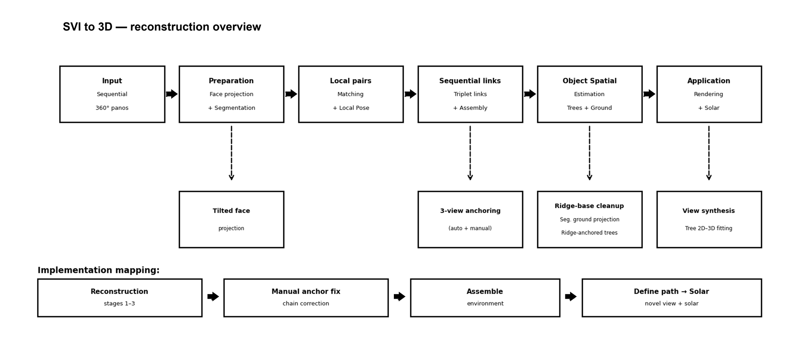
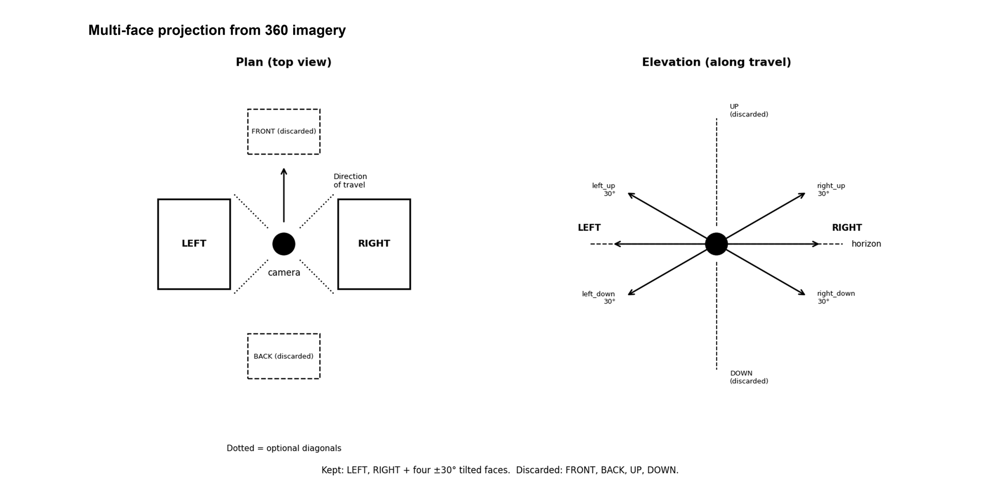
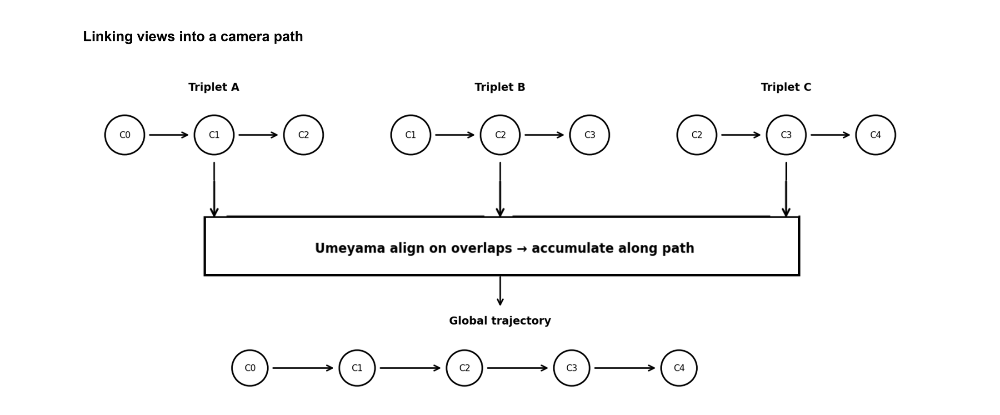
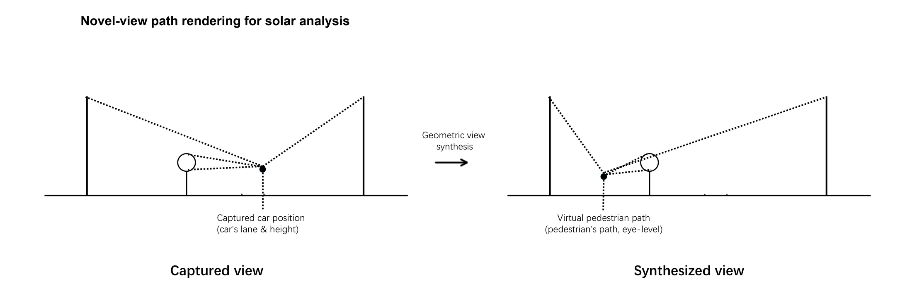
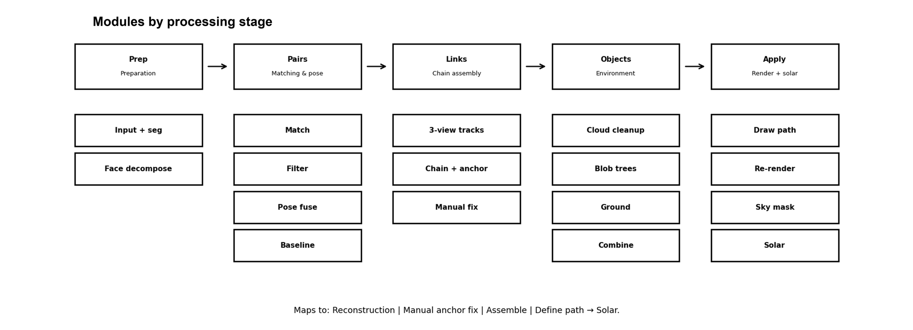
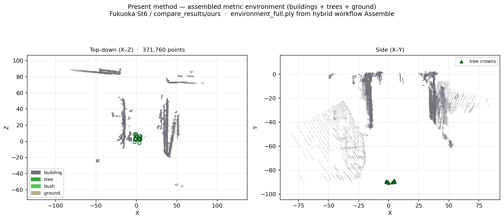
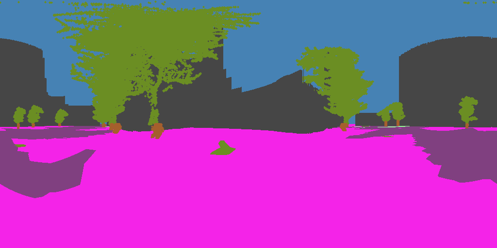
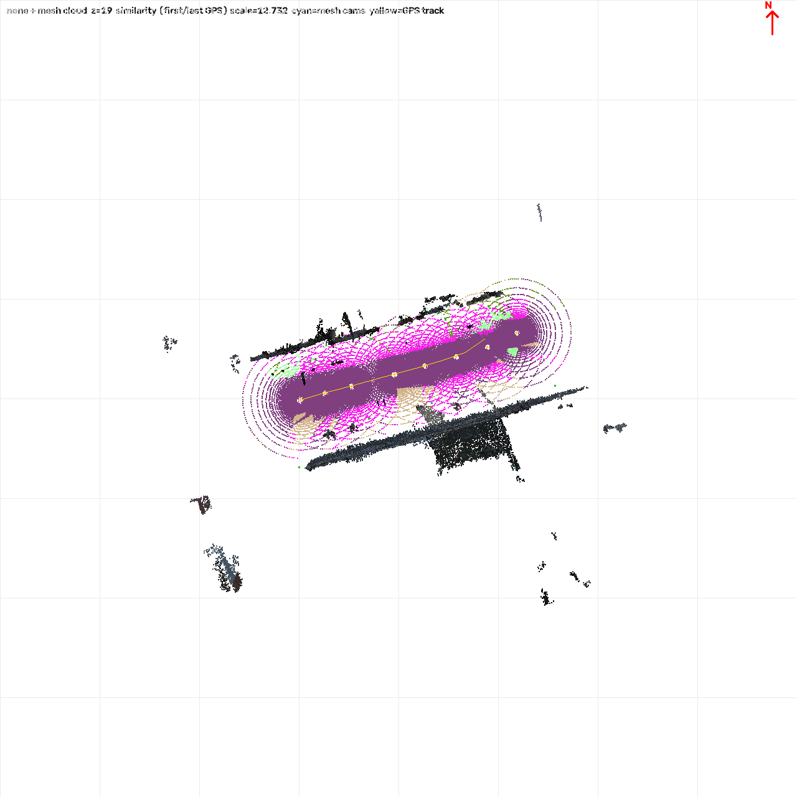

Use available street-view panoramas as the source, reconstruct an analysis-ready urban environment, and synthesise eye-level views along pedestrian paths where the capture fleet never stood.
Monykandy Leng · Southeast University
Street-view imagery (SVI) is abundant, but it is largely road- and vehicle-centred. Many pedestrian-relevant locations and eye-level perspectives are never photographed, so path-level urban analysis is often locked to capture poses—or forced onto heavy city models that are hard to keep current.
The gap this work targets is viewpoint completeness: generating the missing pedestrian samples from the SVI we already have, then making those views usable for analysis.
From an ordered sequence of equirectangular street-view frames, the pipeline:
Downstream analyses (visibility, greenery, comfort, exposure, and related metrics) can run on those synthesised views. Any single application is an illustration of the novel-view layer—not the identity of the contribution.
A related patent is in process. Public materials stay at problem / outcome / high-level design level; claim-level parameters and full implementation detail are not published here.





Typical products of a corridor run include a registered environment point cloud, a camera path, and novel eye-level panoramas (with sky / occlusion structure) at user-specified pedestrian positions.



Geometry-enabled novel pedestrian views from available SVI—so path-level measurement is not limited to fleet poses. Related conference framing appears in the GISA 2025 segmentation work; this page emphasises the reconstruction → novel-view capability that supports further analysis.
Implementation lives in a private repository (patent process). Access can be shared with supervisors on request.
{kind=link}
{kind=link}
{kind=link}
{kind=link}
{kind=link}
{kind=link}
{kind=link}
{kind=link}